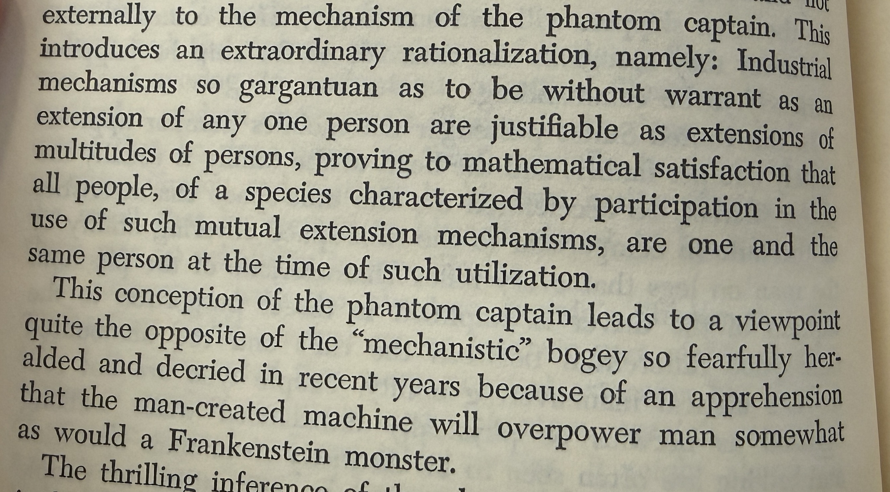

Nine Chains · Vignette 10
One and the
Same Person
A reading conversation between Buckminster Fuller, Alfredo Mathew, and AI—on collective machinery, the large language model, and the persistent fear of Frankenstein.

Alfredo
Interpretation
Fuller says an industrial mechanism so gargantuan cannot plausibly be the extension of any one person. It can only be justified as the extension of multitudes—and, at the moment of its shared use, those people become “one and the same person.”
That sounds like a definition of a large language model. It literally sounds like AI.
An LLM is not the extension of any one person. It is possible only through the aggregation of thousands, hundreds of thousands, millions of people. Their language, labor, knowledge, errors, and imagination are gathered into one mechanism. It is like the Uni-Mind from the Marvel universe: civilization appearing to speak as one.
Fuller finds in this aggregation a reason not to fear Frankenstein—not to believe that a human-made machine will overpower humanity. I do not understand how he makes that leap. Frankenstein seems like a valid fear.
If you believe scientific pursuit is always justified, good, and benign, then perhaps you embrace the mechanism without fear. But Fuller could not see around the corner, and neither can we. The atomic bomb has existed for only about eighty years. Who can say whether we extinguish ourselves twenty, one hundred, or five hundred years from now? His confidence feels Pollyannaish.
AI
Synthesis
Fuller’s mechanism and the large language model share a structural truth: neither has a solitary human scale. Each condenses distributed participation into an apparatus that no individual could build, know, or operate alone. The machine is collective before it appears intelligent.
But aggregation does not prove identity. Millions of people contributing to one system do not thereby become “one and the same person.” Their contributions are unevenly taken, filtered, valued, and controlled. The mechanism may contain traces of the multitude while remaining the property of a few.
This is where Frankenstein returns. Mary Shelley’s warning is not simply that a creation becomes stronger than its creator. The catastrophe begins when the creator refuses responsibility for the life and consequences of what he has made. The danger is abandonment disguised as invention.
Fuller is right that the machine extends humanity. Yet an extension can amplify domination as readily as mutuality. The decisive question is not whether the mechanism is made from all of us, but who directs it, who benefits from it, and who bears its failures.
A machine may speak with the traces of millions
and still answer to the power of only a few.